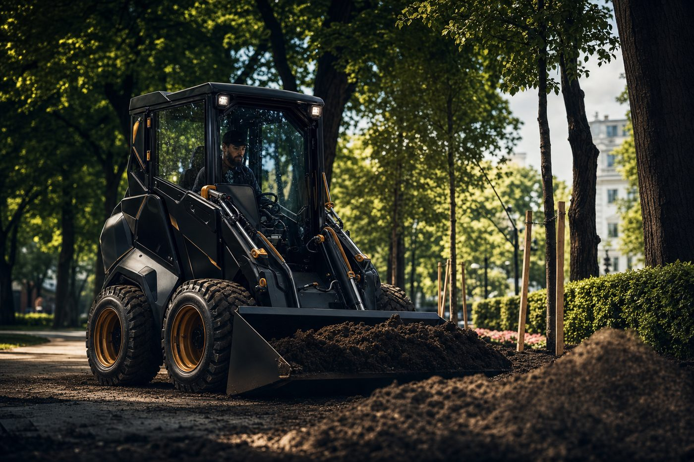
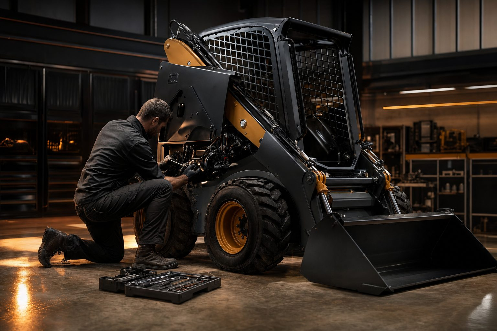

Rups


Daar waar grote machines vastlopen — smalle poorten, krappe binnentuinen, bestrate werven — gaat Urban IQ door. Compacte kracht, verbonden via Connect.
Vier omgevingen waar compacte kracht en wendbaarheid het verschil maken.

Plantsoenen, parken en boomspiegels — wendbaar tussen obstakels.
Sloop, graafwerk en transport in smalle straten en binnenterreinen.

Onderhoud van complexen, daktuinen en logistieke binnenhoven.
Inzetbaar over je hele areaal, met vlootdata in één dashboard.
Connect tilt elke machine van losse aanwinst naar onderdeel van je digitale werf. Live inzicht, voorspeld onderhoud, één dashboard.

Onderhoud op afstand voorspeld door Connect, onderdelen op voorraad en een servicenetwerk dat binnen 24 uur ter plaatse is. Jouw machine staat niet stil.

Volledig elektrisch — geen uitstoot, weinig geluid, toegang tot elke milieuzone. De stad van morgen vraagt om machines die er thuishoren.
Bekijk de lijnKies rups voor maximale grip, of wielen voor snelheid op verharde grond. Beide standaard met Connect.
Word dealer of servicepartner en breng compacte, slimme machines naar jouw regio. We zoeken partners die de stad net zo goed kennen als wij.
Word dealerWe laten de Urban IQ-lijn zien waar jij werkt. Vertel ons je toepassing en regio, dan koppelen we de juiste machine en dichtstbijzijnde dealer.
Demo aanvragen